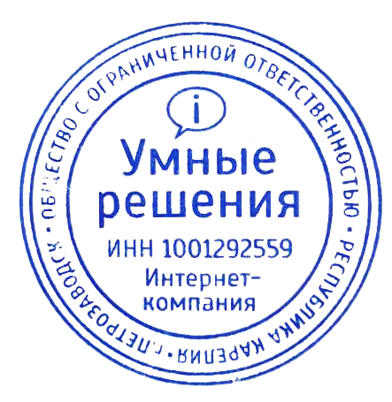

Партнерский договор
о возмездном оказании услуг
№ _ЦТ-13.010/21
г. Петрозаводск
«___» __________2021 г.
Общество с ограниченной ответственностью интернет-компания «Умные решения» (сервис United
Market),в лице генерального
директора Дмитриенко Андрея Андреевича, действующего на основании Устава, именуемое в дальнейшем «Исполнитель»,
с одной
стороны и Общество с ограниченной ответственностью _____________________, в лице генерального
директора
___________________________, действующего на основании Устава, именуемое в дальнейшем
«Заказчик», с другой стороны,
совместно именуемые «Стороны», а по отдельности «Сторона», руководствуясь
гражданским законодательством Российской
Федерации, заключили настоящий договор о нижеследующем:
1. Общие положения
1.1. Путем подписания настоящего договора Стороны подтверждают, что интересам каждой из них соответствует
совместное и
согласованное сотрудничество в следующей сфере:
_____________Доставка Цветов__________________.
1.2. Стороны обязуются осуществлять совместные действия в указанной сфере с целью реализации общих интересов и
достижения совместных целей.
1.3. Стороны осуществляют совместные действия в порядке и на условиях данного Договора, а также отдельных
соглашений, заключенных между Сторонами.
1.4. В процессе достижения поставленных целей и реализации общих интересов Стороны обязуются строить свои
взаимоотношения на основе равноправности, честного и добросовестного партнерства, а также защиты интересов друг
друга.
1.5. Для обеспечения наиболее быстрого и эффективного достижения общих целей Стороны обязуются обмениваться
имеющейся в
их распоряжении информацией относительно их совместных интересов, а также проводить совместные консультации в
случае
необходимости.
1.6. Стороны обязуются принимать все необходимые меры для сохранения конфиденциальной информации, полученной ими
друг от
друга в процессе осуществления сотрудничества, согласно условиям данного договора.
1.7. Доходы, полученные в результате осуществления совместной деятельности и делового сотрудничества Сторон,
распределяются согласно договоренности Сторон.
2. Предмет договора
2.1. По Договору Исполнитель (Onion Market) обязуется оказать Заказчику (Партнер) услуги по размещению
предложений
продажи Товаров и/или Услуг Заказчика в интернете, а также поручать Заказчику исполнение заказов Клиента,
привлеченного
Исполнителем посредством продвижения интернет-платформы Исполнителя.
2.2. Заказчик принимает на себя обязательства по оказанию Услуг и поставки Товаров Клиентам Исполнителя, на
условиях и
за вознаграждение, предусмотренных настоящим Договором.
2.3. Услуги считаются выполненными после фактического совершения сделки между Заказчиком и Клиентом.
2.4. Акцепт Договора производится Заказчиком путем подписания настоящего Договора.
2.5. Предметом настоящего договора является взаимное сотрудничество Сторон с целью расширения сбыта продукции и
услуг, а
также увеличения клиентской базы.
2.6. Стороны могут оказывать друг другу все виды финансовой, технической и организаторской помощи на
взаимосогласованных
условиях.
2.7. Стороны имеют право отказываться от дополнительных предложений, не касающихся основных условий
сотрудничества,
прописанных в данном договоре, если предлагаемые сделки экономически невыгодны, или если сторона не имеет
возможности
выполнить данное поручение надлежащим образом.
3. Права и обязанности сторон
3.1. Стороны обязуются не разглашать конфиденциальные сведения производственного и коммерческого порядка,
которые стали
известны в процессе совместной деятельности.
3.2. Стороны обязуются рекламировать деятельность друг друга в форме и объёмах, согласованных друг с другом.
3.3. Стороны обязуются передавать друг другу все материалы, необходимые для рекламы и продажи своих товаров,
каталоги,
проспекты, чертежи, техническую документацию, фотографии, слайды, рекламные образцы и т. д.
3.4. Стороны имеют право не разглашать информацию о своих Клиентах, кроме тех случаев, когда Клиент привлечён
Исполнителем Заказчику или Заказчиком Исполнителю.
3.5. Исполнитель обязуется:
3.5.1. Разместить предложения о продаже Товаров и/или Услуг Заказчика в интернет-магазине по адресу
https://unitedmarket.org.
3.5.2. Принимать меры по поиску и привлечению потенциальных Клиентов Заказчику, юридических или физических лиц,
и
предоставить им возможность оформлять заявки на услуги, представляемые Заказчиком.
3.5.3. Обеспечить регулярное обновление информации об услугах Заказчика; информация должна быть получена от
Заказчика
посредством письма, направленного на почту
partner@united-market.ru.
3.5.4. Нести ответственность за искажение на Интернет-ресурсах материалов, изображений и текстов, далее
«Материалов»,
переданных для использования согласно данному Договору.
3.5.5. Не заключать договор, аналогичный настоящему Договору с третьим лицом, ведущим деятельность в городе
(районе)
_______ и осуществляющим продажу товаров или услуг, аналогичных товарам или услугам, представленным в
интернет-магазине
https://unitedmarket.org.
3.5.6. В случае окончания действия или досрочного расторжения Договора Исполнитель обязуется прекратить
размещение
Материалов, и в течение 30 (тридцати) календарных дней вернуть Заказчику все полученное для цели исполнения
Договора, в
частности, но не ограничиваясь: удалить с Интернет-ресурсов описания товаров, услуг, рецензии и другие
материалы,
полученные от Заказчика согласно данному Договору.
3.5.7. Сообщать Заказчику об изменениях на Интернет-ресурсе Исполнителя: закрытии сайта, длительном (месяц и
более)
перерыве в работе сайта, изменении URL, e-mail, других существенных для исполнения Договора изменениях в течение
3-х
календарных дней с момента их появления или заблаговременно.
3.5.8. Своевременно принимать и обрабатывать заказы.
3.6. Исполнитель имеет право:
3.6.1. Для учёта произведённых им по настоящему Договору действий формировать базу данных о Клиентах,
привлечённых им
для сотрудничества с Заказчиком.
3.6.2. Получать информацию от Заказчика и/или Клиента о прохождении сделки Заказчика и Клиента, привлечённого
Исполнителем.
3.7. Заказчик обязуется:
3.7.1. Предоставлять услуги Клиентам, привлеченным Исполнителем, точно так же, как и прочим клиентам Заказчика.
3.7.2. Предоставлять Исполнителю всю необходимую для оказания Услуг информацию и документы.
3.7.3. Обеспечивать процедуру оформления Сделки, выполнение Сделки, в некоторых случаях процедуру отмены Сделки
Клиентом, поддержку других процедур.
3.7.4. Обеспечить контроль над учётом Клиентов, привлеченных Исполнителем.
3.7.5. Сообщать Исполнителю о любых изменениях, которые могу повлиять на работу и исполнение заказов, по
электронной
почте или другим способом не менее, чем за 5 (пять) дней до вступления в силу соответствующих изменений.
3.7.6. Выплачивать/оставлять Исполнителю вознаграждение в порядке и размерах, предусмотренных настоящим
Договором.
3.7.7. Предоставлять по требованию Исполнителя информацию о состоянии сделки с привлечённым им Клиентом.
3.7.8. Разместить в своем магазине, либо на входе в магазин логотип Исполнителя на свое усмотрение: наклейка,
плакат,
вывеска, баннер и прочее, на весь период сотрудничества.
3.8. Заказчик имеет право:
3.8.1. Отказаться от исполнения договора в случае, если Клиент отказывается от услуг.
4. Срок действия договора
4.1. Настоящий Договор вступает в силу со дня подписания Соглашения обеими сторонами и действует до конца
текущего
календарного года. Действие настоящего Договора пролонгируется на следующий календарный год, если ни одна из
сторон не
заявила о желании его расторгнуть.
4.2. Исполнитель имеет право расторгнуть Договор в одностороннем порядке, письменно уведомив об этом Заказчика
за 30
(тридцать) календарных дней до даты расторжения Договора.
4.3. Заказчик имеет право расторгнуть Договор в одностороннем порядке, письменно уведомив об этом Исполнителя за
30
(тридцать) календарных дней до даты расторжения Договора.
4.4. Прекращение действия настоящего Договора не может являться основанием для отказа от завершения расчетов по
нему.
5. Порядок изменения и расторжения договора
5.1. Изменение, дополнение и расторжение данного договора допускаются по взаимному согласию Сторон, а в случаях,
установленных законом или данным договором, данный договор может быть прекращен или расторгнут в ином порядке.
5.2. Также данный договор может быть расторгнут в одностороннем порядке по инициативе одной из Сторон путем
направления
письменного уведомления на почту partner@united-market.ru не менее чем за 30 (тридцати) календарных дней до даты
его
расторжения.
5.3. Изменения и дополнения данного договора оформляются отдельным письменным соглашением, если такое изменение
или
дополнение осуществляется по взаимному согласию Сторон.
5.4. Документ, который вносит изменения в данный договор, подписывается уполномоченными представителями Сторон.
6. Размер и порядок расчетов
6.3. Исполнитель обязуется в течение 5 (пяти) календарных дней, после завершения взаиморасчетов по сделке с
Клиентом,
выплатить Заказчику сумму оплат за товары или услуги, поступающую от Клиента в адрес Исполнителя посредством
системы
интернет-эквайринга в полном объеме, за вычетом комиссионного вознаграждения в размере__20__ % от стоимости
каждого
проданного в интернет-магазине товара. Вознаграждение включает в себя все необходимые налоги и сборы,
предусмотренные
действующим законодательством РФ.
6.4. Факт осуществления продажи подтверждается информацией системы интернет-эквайринга и на странице управления
сайта,
что свидетельствует об успешном поступлении Стороне оплаты Услуг.
6.5. Обязательства по выплате вознаграждения считаются исполненными с момента списания денежных средств с
расчетного
счета Исполнителя в пользу Заказчика в установленном в п.6.3 объёме.
6.6. Все расчёты между Сторонами осуществляются за конкретно выполненные работы и предоставленные услуги.
7. Ответственность
7.1. За неисполнение, либо ненадлежащее исполнение сторонами своих обязательств по настоящему Договору Стороны
несут
ответственность в соответствие с действующим законодательством РФ.
7.2. За умышленное сокрытие Заказчиком от Исполнителя информации, о завершении взаиморасчётов по сделке с
Клиентом,
привлечённым Исполнителем, повлекшее невыплату вознаграждения Исполнителю, Заказчик обязан выплатить
Исполнителю, сверх
предусмотренного настоящим Договором вознаграждения, штраф в размере 20% от суммы сделки (контракта).
7.3. В случае, если на момент расторжения договора между Заказчиком и Исполнителем, Заказчиком и Клиентом со
стороны
Заказчика остались незавершенные сделки, взаиморасчеты, либо другие взаимодействия, то их следует завершить
перед
расторжением договора. Также, если Заказчик не уведомил Исполнителя о расторжении договора в установленный срок,
то
Заказчик обязуется выплатить штраф в размере полной стоимости заказа +20% от стоимости заказа.
7.4. Стороны освобождаются от ответственности за неисполнение или ненадлежащее исполнение обязанностей, если это
вызвано
действием обстоятельств непреодолимой силы.
8. Форс-мажорные обстоятельства
8.1. Ни одна из Сторон не несет ответственности за полное или частичное неисполнение своих обязательств по Договору,
если это неисполнение возникает из-за форс-мажорных обстоятельств (далее по тексту ФМО), которые Стороны не могли ни
предвидеть, ни предотвратить разумными мерами до заключения настоящего договора. К числу оговоренных событий стороны
относят такие как: стихийные бедствия, военные действия, террористические акты, блокада, пандемия, действия и акты
государственных органов нормативного характера, создающие невозможность выполнения обязательств по настоящему договору.
8.2. Сторона, для которой стало невозможным исполнение обязательств в результате наступления ФМО, должна в течение 2
(двух) рабочих дней с момента наступления ФМО уведомить в письменном виде (письмо на почту
partner@united-market.ru)
другую Сторону о начале, предполагаемом времени действия (длительности) и прекращении указанных обстоятельств.
8.3. Уведомление о наличии и продолжительности ФМО должно быть подтверждено соответствующим сочтенным контрагентом
достоверным источником.
8.4. В случае наступления оговоренных выше ФМО и при условии надлежащего сообщения о них, срок исполнения обязательств
по настоящему договору продлевается на период, соразмерный сроку действия ФМО и разумному сроку их последствий.
8.5. Если невозможность полного или частичного выполнения обязательств сторонами по настоящему договору будет
существовать более 1 (одного) месяца, то любая из Сторон имеет право расторгнуть настоящий договор полностью или
частично с приведением сторон к первоначальному положению без обязательств возместить возможные убытки.
9. Положения о конфиденциальности
9.1. Условия настоящего договора и приложений к нему, а также информация и документы о третьих лицах (клиентах), а равно
иные сведения, полученные сторонами в ходе исполнения обязательств по настоящему договору, конфиденциальны и не подлежат
разглашению (за исключением случаев, когда разглашение указанной выше информации является безусловной обязанностью
стороны).
9.2. Стороны принимают все необходимые меры для того, чтобы их сотрудники, правопреемники без предварительного согласия
другой Стороны не информировали третьих лиц о деталях данного договора и приложений к нему.
10. Порядок разрешения споров
10.1. Все разногласия и споры, которые могут возникнуть между Сторонами в связи с исполнением данного договора,
разрешаются путем переговоров.
10.2. В случае если Стороны в результате переговоров не смогли достигнуть взаимного согласия по возникшим разногласиям,
а также в случае если одна из Сторон уклоняется от проведения переговоров, то спор разрешается в судебном порядке,
установленном законодательством.
11. Заключительные положения
11.1. Стороны подтверждают, что ни одна из Сторон не будет ссылаться в будущем на недостижение согласия по существенным
условиям договора, как на основание считать его незаключенным или недействительным.
11.2. Стороны подтверждают, что в случае если какое-либо условие настоящего договора станет, либо будет признано,
недействительным в связи с несоответствием закону, то такое условие не будет приниматься во внимание или же Стороны
примут меры по изменению договора в той степени, чтобы сделать договор действительным и сохранить в полном объеме
намерения Сторон.
11.3. Стороны предоставили друг другу согласие на обработку, распространение и использование персональных данных,
содержащихся в настоящем договоре, приложениях к нему, актах, заключаемых на его выполнение, с целью надлежащего
исполнения условий настоящего договора и согласно действующему законодательству.
11.4. Договор составлен в двух экземплярах, по одному для каждой из Сторон.
11.5. Все письменные приложения и дополнения к Договору являются его неотъемлемыми частями.
11.6. Стороны обязуются сообщать друг другу об изменении своих почтовых адресов, номеров телефонов, телефаксов и адресов
электронной почты и других контактных данных.
11.7. Любые изменения и дополнения к Договору действительны лишь при условии, что они составлены в письменной форме и
подписаны уполномоченными представителями сторон.
11.8. Если иное не предусмотрено Договором, уведомления, требования и иные юридически значимые сообщения могут
направляться Сторонами факсом, электронной почтой или иным способом связи при условии, что он позволяет достоверно
установить, от кого исходило сообщение и кому оно адресовано.
11.9. Стороны обязуются соблюдать конфиденциальность перед третьими лицами в отношении информации и документации,
полученной ими в ходе исполнения настоящего Договора, за исключением той информации и документации, раскрытие которых
разумно необходимо в целях выполнения своих обязательств по настоящему Договору.
11.10. В том, что не предусмотрено настоящим Договором, стороны руководствуются действующим Законодательством РФ.
11.11. Товары и Услуги Заказчика размещаются Исполнителем по адресу
https://unitedmarket.org в
информационно-телекоммуникационной сети Интернет.
11.12. Расходы, связанные с эксплуатацией, продвижением и обслуживанием страницы, на которой размещаются Товары и Услуги
Заказчика, размещенного по адресу
https://unitedmarket.org , несет Исполнитель.
11.13. Расходы, связанные с хранением, обработкой и упаковкой Товара несет Заказчик.
11.14. Расходы, связанные с разработкой и изготовлением логотипа, несет Исполнитель.
11.15. Заказчик гарантирует, что цены на Товары и Услуги, предоставленные Исполнителю, ниже цен на аналогичные товары,
реализуемые Заказчиком самостоятельно путем размещения предложений на сайтах в сети Интернет и социальных сетях.
11.16. Заказчик гарантирует, что качество Товара соответствует требованиям к качеству и безопасности Товара,
установленным законодательством Российской Федерации.
12. Адреса, реквизиты и подписи сторон
| Исполнитель: |
Исполнитель: |
ООО интернет-компания «Умные решения» (сервис Onion Market)
Юридический адрес: 185035, Республика Карелия, г. Петрозаводск, ул. Гоголя (Центр Р-Н), д. 58, офис 6
ИНН: 1001292559
ОГРН: 1151001000820
КПП: 100101001
Банк:
ФИЛИАЛ “САНКТ-ПЕТЕРБУРГСКИЙ” АО
“АЛЬФА-БАНК”
БИК: 044030786
Кор.счёт: 30101810600000000786
Расч.счет: 40702810732460000526
+7 999 333 54 01
partner@united-market.ru
______________ / Дмитриенко А.А./

|
___________ / /
|